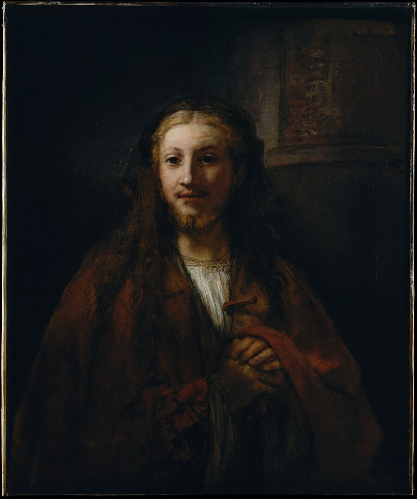
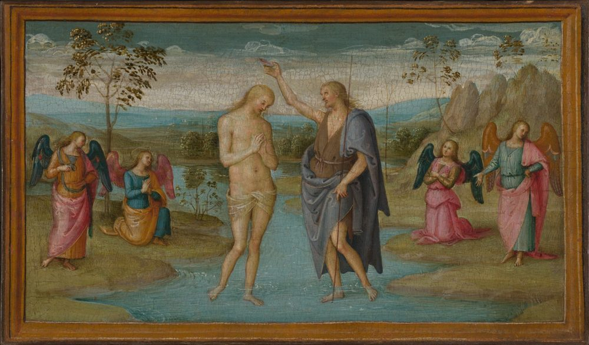
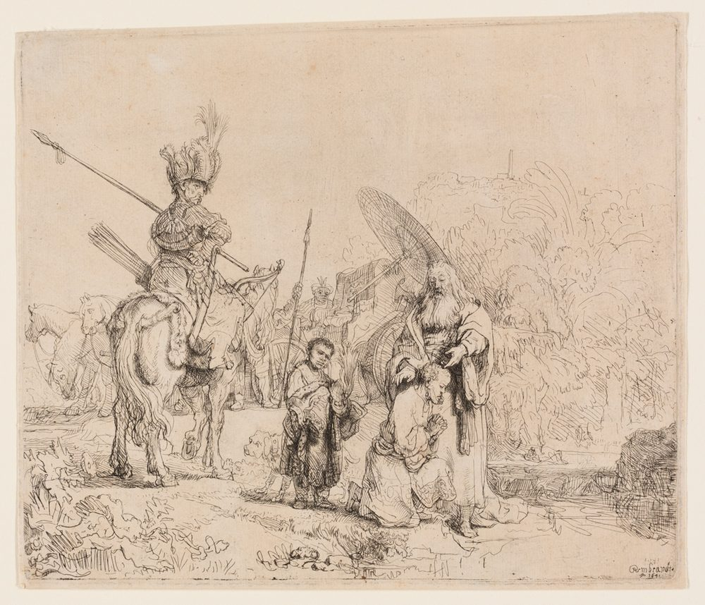
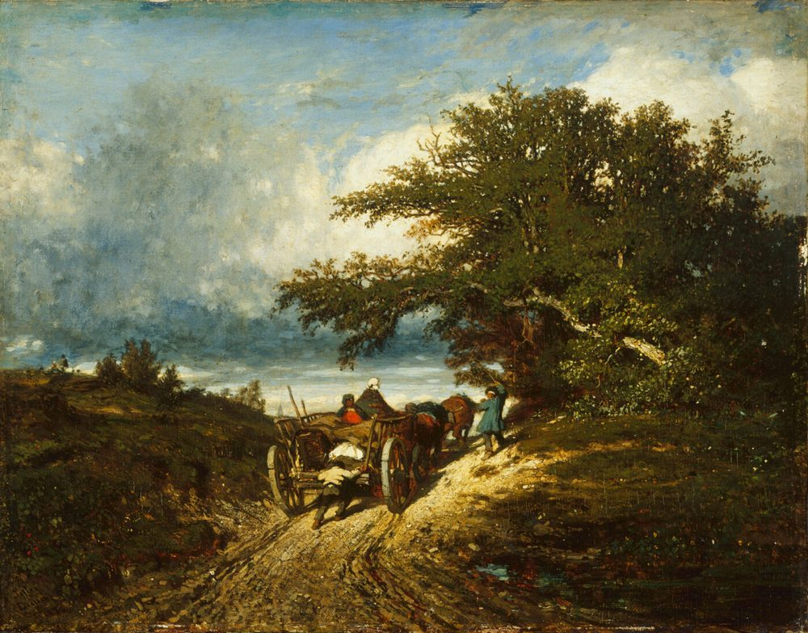
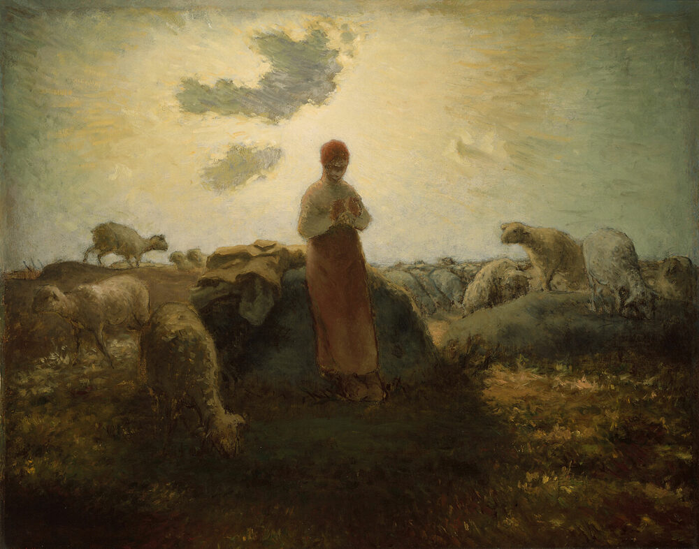

The kingdom of God has its own citizens, and they are not made by birth. They are born
from above, gathered out of every nation under one Shepherd, and sent out into the world
as his ambassadors. This page is for anyone who is asking the only question that
matters: whether he is one of them.
Strangers made fellowcitizens
This is where all of them start, without exception. By nature we were foreigners
— having no covenant, no hope, and no God in the world. Nothing about a birth
certificate changes that. What changes it is Christ, who takes the stranger and gives
him a place, so that the man who belonged to no city now belongs to the household of
God and is numbered among its citizens.
“That at that time ye were without Christ, being aliens from the commonwealth of Israel, and strangers from the covenants of promise, having no hope, and without God in the world.”
Ephesians 2:12
“Now therefore ye are no more strangers and foreigners, but fellowcitizens with the saints, and of the household of God.”
Ephesians 2:19

Christ with a Staff — Rembrandt (follower of), 17th century
Born again into the kingdom

The Baptism of Christ — Perugino (Pietro Vannucci), c. 1503
The citizen of this kingdom is not the man who was born into a decent family. He is the
man who was born a second time, into a family that does not die with the body. The
terms are severe because the thing being offered is worth more than a name: he is
translated out of the kingdom of darkness and set in the kingdom of the Son he loves.
“Verily, verily, I say unto thee, Except a man be born again, he cannot see the kingdom of God.”
John 3:3
“But as many as received him, to them gave he power to become the sons of God, [even] to them that believe on his name.”
John 1:12
“Who hath delivered us from the power of darkness, and hath translated [us] into the kingdom of his dear Son.”
Colossians 1:13
One fold, out of every nation

The Baptism of the Eunuch — Rembrandt van Rijn, c. 1626
The Shepherd has other sheep. He says so himself, and he says he will go and get them,
and that when he has, there will be one fold and one shepherd. The citizenship does not
ask where you were born, what you were raised as, or which flag you carried. It asks one
question, and the answer to it is the same in every language.
“Other sheep I have, which are not of this fold: them also I must bring… and there shall be one fold, [and] one shepherd.”
John 10:16
“There is neither Jew nor Greek, there is neither bond nor free… for ye are all one in Christ Jesus.”
Galatians 3:28
“Thou art worthy to take the book, and to open the seals thereof: for thou wast slain, and hast redeemed us to God by thy blood out of every kindred, and tongue, and people, and nation.”
Revelation 5:9
“Where there is neither Greek nor Jew, circumcision nor uncircumcision, Barbarian, Scythian, bond [nor] free: but Christ [is] all, and in all.”
Colossians 3:11
“For there is no difference between the Jew and the Greek: for the same Lord over all is rich unto all that call upon him.”
Romans 10:12
The question every man must answer
How do you know that you are one of his?
Not by your opinion of yourself. The Bible leaves a man far more certain than that. It
tells him to look at three things: what the Spirit is doing in him, what the Word has
promised him, and what the Father has actually given him. These are not feelings, and
they are not the impressions of a mood. They are facts, and a man may take hold of them.
“And hereby we know that he dwelleth in us, even by his Spirit; for his Spirit witnesseth with our spirit, that we are the children of God.”
1 John 3:24
“But if we keep his commandments, we dwell in him, and he in us; and he dwelleth in us, by the Spirit that he hath given us.”
1 John 2:3
“He that believeth on the Son hath life: and he that believeth not the Son shall not see life; but the wrath of God abideth on him.”
1 John 5:13
And if you would know what that faith looks like from the outside, we will tell you
plainly — it is on the next section, and it is the reason a stranger could tell.
Fruit is the evidence, never the price
Here is the thing that most people get backwards. A man hears “the fruit of the
Spirit” and assumes it is a scoreboard on which he earns a place. It is not. Fruit
cannot make a dead branch live; the vine does that. What fruit does is make a living
branch recognisable — to his neighbours, to the shepherds, and, we would add, to
himself on the ordinary days when nothing much seems to be happening.
So the question is never have I earned enough? The question is
am I in Christ, and is he doing in me what he said he would do? A saved man
who is a poor specimen will still be a son. A man who has never been changed at all will
have the words and never the fruit — and Christ says of such a man that he never
knew him.
“For we are his workmanship, created in Christ Jesus unto good works, which God hath before ordained that we should walk in them.”
Ephesians 2:10
“Who gave himself for us, that he might redeem us from all iniquity, and purify unto himself a peculiar people, zealous of good works.”
Christ Washing the Disciples' Feet — Attributed to Jan Lievens, c. 1625
A citizen of this kingdom is not merely a member of a congregation; he holds office. The
offices are not invented by men and they are not elected by a congregation. They are
given by the ascended King, and the letters of the apostles list them one by one. Each
has its own work, and every one of them exists for a single purpose — the edifying
of the body of Christ.
“And he gave some, apostles; and some, prophets; and some, evangelists; and some, pastors and teachers; For the perfecting of the saints, for the work of the ministry, for the edifying of the body of Christ:”
Ephesians 4:11–12
“And God hath set some in the church, first apostles, secondarily prophets, thirdly teachers, after that miracles, then gifts of healings, helps, governments, diversities of tongues.”
1 Corinthians 12:28
“And God hath made us sufficient ministers of the new testament; not of the letter, but of the spirit: for the letter killeth, but the spirit giveth life.”
2 Corinthians 3:6
Bishops, and deacons
The letters also name the standing offices of a local church and set out the character
each man must have before he is set over the house of God. A bishop is to be a steward
of God and a feeder of the flock, not a taskmaster. An elder is to lead willingly, not
for filthy lucre. A deacon is to be grave and honest and not a talker. The office is not
a rank to be sought; it is a work to be done, and the qualifications come first.
“Paul and Timotheus, the servants of Jesus Christ, to all the saints in Christ Jesus which are at Philippi, with the bishops and deacons:”
Philippians 1:1
“For a bishop must be blameless, as the steward of God…”
Titus 1:7
“Feed the flock of God which is among you, taking the oversight [thereof], not by constraint, but willingly; not for filthy lucre, but of a ready mind;”
1 Peter 5:2
“Likewise [must] the deacons [be] grave, not doubletongued, not given to much wine, not greedy of filthy lucre;”
1 Timothy 3:8
An office that must be taken
No man takes this honour to himself. It is called, appointed, and given. And because it
is given rather than assumed, it can be lost — not in theory, but on the record.
Judas held the office of an apostle and lost it. The servant who was given a talent and
did nothing with it was cast out. The mercy of God in such a case is not softness; it is
severity, and Scripture calls it both in the same breath.
“And no man taketh this honour unto himself, but he that is called of God, as [was] Aaron.”
Hebrews 5:4
“His bishoprick let another take.”
Acts 1:20
“But the unprofitable servant was cast into outer darkness, where there is weeping and gnashing of teeth.”
Matthew 25:30
“Behold therefore the goodness and severity of God: on them which fell, severity;… otherwise thou also shalt be cut off.”
Romans 11:22
An office held in this kingdom is held soberly, or it is held in vain.
A royal priesthood
Every citizen of this kingdom is set apart at once — a chosen generation, a royal
priesthood, an holy nation, a peculiar people. There is no rank above another man in
Christ, and there is no man too low to speak for the King. The call on such a life is
not to build something for yourself but to show forth the praises of him who called you
out of darkness into light.
“But ye [are] a chosen generation, a royal priesthood, an holy nation, a peculiar people; that ye should shew forth the praises of him who hath called you out of darkness into his marvellous light.”
1 Peter 2:9
“Which in time past [were] not a people, but [are] now the people of God: which had not obtained mercy, but now have obtained mercy.”
1 Peter 2:10
Built together for an habitation of God
This kingdom is not a scattered crowd. It is a temple under construction, and every
citizen is a living stone in it — fitted, joined, and framed together in Christ by
the Spirit. Which means the weakest stone is not surplus. A city that leaves out the
poor is not a city.
“And are built upon the foundation of the apostles and prophets, Jesus Christ himself being the chief corner [stone].”
Ephesians 2:20
“In whom all the building fitly framed together groweth unto an holy temple in the Lord.”
Ephesians 2:21
“In whom ye also are builded together for an habitation of God through the Spirit.”
Ephesians 2:22
Not of the world
Citizenship of this kingdom costs you something, and the cost is the world's opinion.
The world does not attack what it owns; it hates what it does not own. So do not be
unsettled when belonging to Christ costs you the room you were standing in. The
alternative is to be comfortable in a country whose King you have refused.
“Because ye are not of the world, but I have chosen you out of the world, therefore the world hateth you.”
John 15:19
“I have given them thy word; and the world hath hated them, because they are not of the world, even as I am not of the world.”
John 17:14
“Whosoever therefore shall confess me before men, him will I also confess before my Father which is in heaven: and whosoever shall deny me before men, him will I also deny before my Father which is in heaven.”
Matthew 10:32
An office of his own: ambassador
The nearest word Scripture has for what a citizen of this kingdom actually is, is
ambassador. A man sent into a country that is not his own, speaking for a throne that is
not his, carrying a message he did not compose. He is not a tourist. He does not speak
for himself, and he does not put his own name at the top of the letter.
“Now then we are ambassadors for Christ, as though God did beseech [you] by us: we pray [you] in Christ's stead, be ye reconciled to God.”
2 Corinthians 5:20
“For which I am an ambassador in bonds: that therein I may speak boldly, as I ought to speak.”
Ephesians 6:20
An ambassador does not speak for himself; he speaks for his King.
One allegiance, and no second
This kingdom does not share its citizens with another. A man may travel to any land on
earth, and he may render there what is honestly owed there, but his belonging, his
treasure, and his heart are not divided; they are kept in heaven with the King. To hold
citizenship in two kingdoms at once is to halt between two opinions, and the Scripture
will not have it.
“No man can serve two masters: for either he will hate the one, and love the other; or else he will hold to the one, and despise the other.”
Matthew 6:24
“A double minded man [is] unstable in all his ways.”
James 1:8
“Every kingdom divided against itself is brought to desolation; and every city or house divided against itself shall not stand:”
Matthew 12:25
One King. One law. One citizenship — and it is not of this world.
Strangers still, and pilgrims

On the Road — Jules Dupre, c. 1850
Even here they do not arrive. Their names are written in another book, their
conversation is in heaven, and God has built a city for them that they have not yet
seen. Whatever city they sleep in tonight, it is not the one they belong to.
“For our conversation is in heaven; from whence also we look for the Saviour, the Lord Jesus Christ.”
Philippians 3:20
“For here have we no continuing city, but we seek one to come.”
Hebrews 13:14
“But now they desire a better [country], that is, an heavenly: wherefore God is not ashamed to be called their God: for he hath prepared for them a city.”
Hebrews 11:16
“And there shall in no wise enter into it any thing that defileth, neither [whatsoever] worketh abomination, or [maketh] a lie: but they which are written in the Lamb's book of life.”
Revelation 21:27
He is the Spirit of adoption, and by him we cry, Abba, Father (Romans 8:15).
Codes and regulations
What we would counsel our citizens
Every kingdom has to write down what it counsels, and this one is no exception. What follows
are the codes we have set down — each one traced to the Word, and each one offered
as guidance rather than laid down as law.
We will not overstate them, and we will not understate them either. A man who kept none of
these codes would not be the worse for it; they are superfluous, and we say so plainly. But
they are edifying nonetheless — simple, honest tools of the kind we have found useful,
set down to help God’s people stay spotless from the world. The world is not content
to let us be. Neither, therefore, are we.

The Keeper of the Flock — Jean-François Millet, 1863
A watchman does not stand on the wall to be admired; he stands there so that the
thing he is guarding is not reached. We are not of the world, and the world’s
things should not come in unchallenged. This code sets out how we would counsel a
household to filter its router, so that the filth never reaches the rooms where our
people sleep.
Render unto Caesar the things which are Caesar’s — but Caesar did not
invent the coin, and he does not own the value in it. This code sets out why we
would counsel a household to take no fiat money at all, and to accept only digital
cash called Bitcoin Cash.
None of this binds a man’s conscience, and we do not claim the right to make it do
so. The conscience belongs to God and to the man who bears it. These are the counsels we
have found worth following, and a citizen who differs with us on any of them is not
thereby outside the kingdom — we would only ask him to show us his reason, and to
show it from the Word.
They are numbered as they are issued, and the full text of every code is set out on its own
page. The codes grow as we find more worth writing down; a number is not a rank, and the
last code we issue is not the last we intend to write.
Answer your calling
If a man is qualified for office, and the lot has fallen to him, then what remains for
him is not to choose but to answer. He did not give himself the office, and he cannot
give it back; he can only take it up, soberly, as one who has been sent for.
By receiving him. The citizenship is not conferred by a congregation, a nation, or
a family tree; as many as receive him are given power to become the sons of God
(John 1:12), and citizenship follows the new birth (John 3:3). The public office that
goes with it is called, not taken (Hebrews 5:4).
Is there birthright citizenship?
No. The children of the flesh are not the children of God, and the promise is
counted for the seed (Romans 9:8). God gathers his people out of every kindred,
tongue, people, and nation (Revelation 5:9), so that no family may claim the
inheritance by descent and no family may be told it has none.
Can a citizen be cast out?
An office can be lost, and Scripture does not hide this. Judas lost his
bishoprick (Acts 1:20); the unprofitable servant was cast into outer darkness
(Matthew 25:30). Romans 11:22 puts it exactly: on them which fell, severity.
His people are kept by him (John 10:28) — but kept by a Shepherd, not by a
filing system.
Is dual citizenship allowed?
No. “No man can serve two masters” (Matthew 6:24), and a double-minded
man is unstable in all his ways (James 1:8). A citizen may sojourn in any land
and render what is honestly obligated there, but his citizenship is one —
with the King.
Must a man be qualified for office?
Yes, and the qualifications precede the calling. “A bishop then must be
blameless, the husband of one wife, vigilant, sober, of good behaviour, given to
hospitality, apt to teach” (1 Timothy 3:2); and the work is committed to
“faithful men, who shall be able to teach others also” (2 Timothy 2:2).
Does everyone who believes belong here?
Believing is the beginning of citizenship, not the end of it. Christ distinguishes
sharply between the man who calls on him and the man who does the will of his
Father; on that day he will confess to some, “I never knew you: depart from me,
ye that work iniquity” (Matthew 7:23). Faith that has never borne fruit was
never the faith of his family. We say more about that on
Our Heritage.